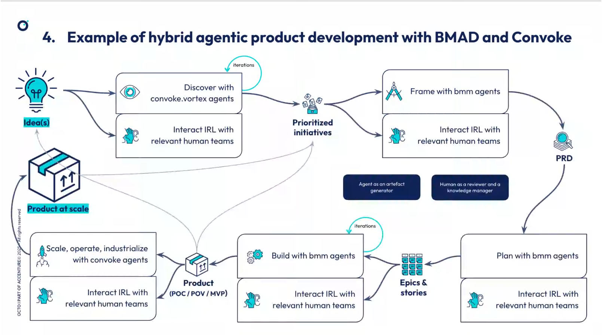
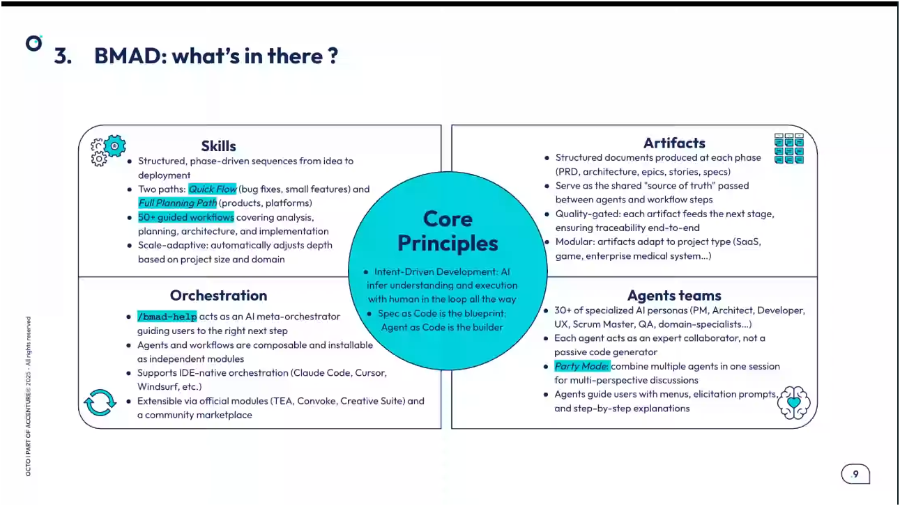

Synthèse interactive des captures de conférence
BMAD, Convoque et pilotage agentique du cycle produit
Cette page explique le concept BMAD à partir des captures: comment passer d’un agent de code à un système de livraison structuré, puis à une vision plus large du cycle produit avec Convoque.
BMADAgents, workflows, artefacts et Document as Code pour structurer le delivery.
ConvoqueExtension vers discovery, readiness, opérations, knowledge et gouvernance.
HumainReviewer, arbitre et knowledge manager: pas de délégation totale.

Le fil conducteur
La conférence ne présente pas BMAD comme une baguette magique. Elle montre une progression: agent de code, framework agentique, delivery structuré, puis extension vers le cycle produit complet.
BMAD expliqué simplement
Clique sur un concept pour voir son rôle dans la méthode. Le but: comprendre les briques, pas mémoriser une définition abstraite.

Capture source: BMAD contient skills, artifacts, orchestration et agent teams.
Où se place BMAD ?
La capture oppose plusieurs façons d’utiliser l’IA dans le développement. BMAD se rapproche d’une approche pilotée par l’intention et les spécifications.
| Approche | Idée simple | Risque principal |
|---|---|---|
| AI-Driven Development | L’IA est un outil actif dans le cycle de développement. Le développeur garde le contrôle. | Rester au niveau assistant sans vraie structure de delivery. |
| Spec-Driven Development | Les spécifications deviennent une référence pour générer le code. C’est proche du Document as Code. | Produire de bonnes specs demande un vrai cadrage humain. |
| Intent-Driven Development | L’IA infère aussi des documents et des spécifications à partir de l’objectif produit. | Le niveau de contrôle varie selon la capacité à challenger l’IA. |
| Vibe coding | L’IA produit beaucoup à partir d’objectifs vagues. | On avance vite mais sans compréhension ni gouvernance suffisante. |
Pourquoi Convoque étend BMAD
Convoque ajoute une logique “team of teams”: des équipes d’agents, de nouveaux skills, et une orchestration pour les phases que BMAD couvre moins bien.
Cycle produit hybride
Le produit n’avance pas comme une ligne droite. Les agents génèrent des artefacts, les humains challengent, et l’équipe revient en arrière quand les preuves l’exigent.
Agent as artifact generator. Human as reviewer and knowledge manager.
Gravity model, pas pipeline
Dans la conférence, le cycle de vie est présenté comme un modèle de gravité: les phases sont attirées par les preuves et les risques, pas par une séquence rigide.
Knowledge engineering
L’infrastructure de connaissance doit exister avant les pratiques avancées. Sinon les agents travaillent sur du sable: documents périmés, décisions oubliées, contexte invisible.
Sources
Codebases, docs existantes, expertise équipe, historique de décisions, incidents reports.
- Extract
- Elicit
- Mine
Engineering
Transformer la documentation en knowledge assets utilisables par les agents et les humains.
- Extract
- Refine
- Curate
- Expose
Consommateurs
Discovery, build, readiness, tous les périmètres, agents et équipes humaines.
- Refine
- Validate
- Structure
Les forces transverses
Ces concepts empêchent l’agentique de devenir une usine à documents fragiles: entropie, gouvernance, domain mesh et gestion de la charge cognitive.
Conseils pratiques
Les tips de la conférence sont très opérationnels: ils expliquent comment commencer sans tomber dans la sur-automatisation.
Mini quiz
Trois questions rapides pour vérifier que tu as compris l’idée centrale.
Question
Galerie des captures
Toutes les captures fournies sont intégrées. Clique pour agrandir une image et relier la source visuelle au concept expliqué.
À retenir pour l’oral
Une version courte, prête à dire à l’oral, centrée uniquement sur BMAD, Convoque et les concepts de la conférence.
BMAD
Framework de delivery agentique: agents spécialisés, workflows, documents et orchestration.
Convoque
Extension orientée team of teams, discovery, production readiness, gouvernance et knowledge.
Party mode
Plusieurs agents raisonnent ensemble pour challenger un sujet et détecter plus d’angles morts.
Document as Code
Les documents produit sont versionnés comme le code: PRD, specs, architecture, backlog, décisions.
Gravity model
Le cycle produit bouge selon preuves et risques, pas selon une séquence linéaire fixe.
Entropy
Les artefacts perdent de la fiabilité avec le temps. Il faut surveiller fraîcheur, drift et confiance.